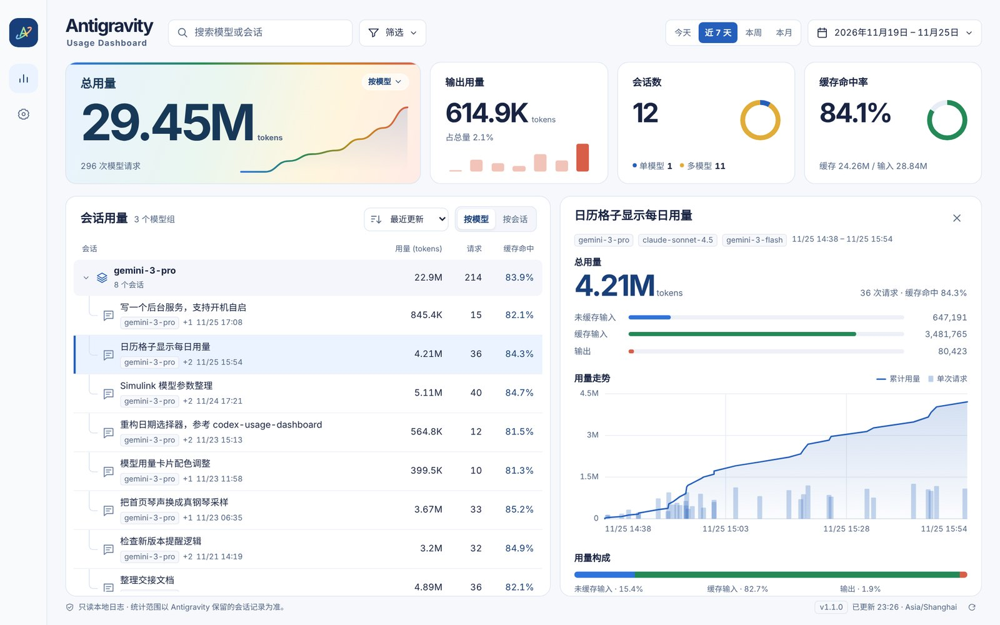
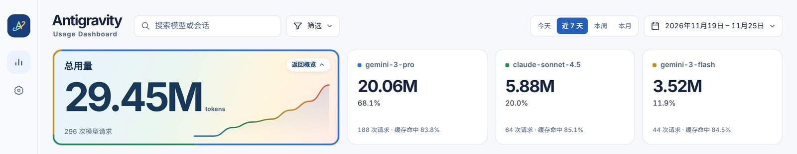

首页Home / 项目Projects / Antigravity 用量面板Antigravity Usage Dashboard
Antigravity
用量面板Antigravity
Usage
一个本地运行的网页面板，读取 Antigravity 留在电脑上的日志，统计每天、每个模型、每个会话用了多少 token、缓存命中率多少。无需安装依赖，可装成后台服务开机自启。A local web dashboard that reads the logs Antigravity leaves on your computer and shows token usage and cache hit rate by day, model and session. No dependencies to install, and it can run as a background service at login.
- 类型Type
- 本地网页面板Local web dashboard
- 技术Stack
- Node.js 20 · 原生 JS，无依赖Node.js 20 · vanilla JS, no deps
- 系统Platforms
- Windows · macOS · Linux
- 版本Version
- v1.1.0
做什么What it does
Antigravity 会把每次对话的记录写在本机日志里，但不会告诉你一共用了多少 token。这个面板读取这些日志，把用量按日期、模型和会话整理出来，打开浏览器就能看。Antigravity writes every conversation to local logs but never tells you how many tokens you have used. This dashboard reads those logs and organises usage by date, model and session in your browser.

主要功能Features
- 四张总览卡：总用量、输出用量、会话数、缓存命中率，悬停可看具体数值。Four summary cards: total and output tokens, session count and cache hit rate, with hover details.
- 按模型查看：点「总用量」卡片，其他卡片切换成各模型的用量和占比，边框按占比分段着色。By model: click the total card and the others turn into per-model usage and share, with borders coloured by share.
- 日历选区间：日历格子里直接显示每天的用量，点两天就选出一段区间，底部有本月和今年合计。Calendar range picker: each day shows its usage; click two days to pick a range, with month and year totals below.
- 会话详情：未缓存输入、缓存输入和输出的构成，累计走势图可以用方向键逐条看每次请求。Session detail: uncached input, cached input and output, plus a cumulative chart you can step through request by request with the arrow keys.
- 后台常驻：一条命令装成后台服务，可选开机自启和异常退出后自动重启，Windows、macOS、Linux 都支持。Background service: one command installs it, with optional autostart and auto-restart on Windows, macOS and Linux.
- 新版本提醒：有新版本时顶部出现提示条，运行
npm run update即可更新，不会覆盖本地改动。Update notice: a banner appears when a new release is out;npm run updateupdates without overwriting local changes.

统计口径与隐私How it counts, and privacy
- 每条有效的模型回复日志算一次请求；总用量 = 未缓存输入 + 缓存输入 + 输出；缓存命中率 = 缓存输入 ÷ 全部输入。Each model response in the log counts as one request; total = uncached input + cached input + output; cache hit rate = cached input ÷ all input.
- 服务只监听本机
127.0.0.1，只读本地日志，不需要任何 API 密钥。唯一的联网请求是检查新版本，可以关掉。It only listens on127.0.0.1, only reads local logs and needs no API key. The one network request is the update check, which can be turned off.
试一试Try it
git clone https://github.com/Rose-MYS/antigravity-usage-dashboard.git && cd antigravity-usage-dashboard && npm start
然后打开 http://127.0.0.1:8768。需要 Node.js 20 或更新版本。Then open http://127.0.0.1:8768. Requires Node.js 20 or newer.
界面布局和交互参考了 luyh7/codex-usage-dashboard。Antigravity 名称和图标归 Google 所有，本项目为个人开发的非官方工具。Layout and interactions are modelled on luyh7/codex-usage-dashboard. The Antigravity name and icon belong to Google; this is an unofficial personal tool.